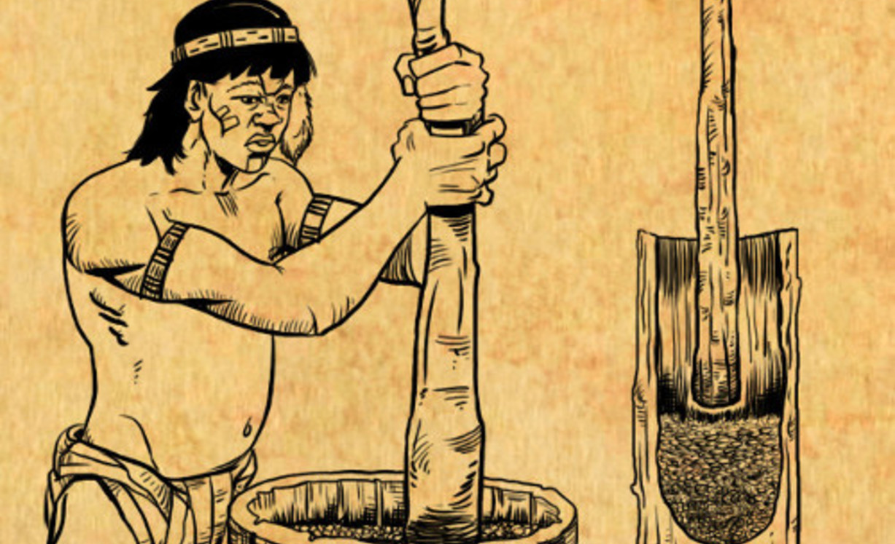

Donde la tradición y el trabajo construyeron un proyecto de vida
Desde fines del siglo XIX, sucesivos contingentes de inmigrantes llegaron a Argentina, a buscar aquí la paz y el trabajo que no encontraban en sus países de origen. Entre ellos, un nutrido grupo de alemanes, entre los que se encontraban productores agropecuarios, se estableció en el noreste de la Provincia de Corrientes. Desde allí, fueron integrando a los inmigrantes ucranianos y polacos que ya estaban establecidos en el sur de la Provincia de Misiones, en la Ciudad de Apóstoles. Junto con su capacidad de trabajo y sacrificio, este grupo humano trajo el modelo de las Sociedades Cooperativas como forma de organización de la economía solidaria. Así se funda la Cooperativa Agrícola de la Colonia Liebig Ltda. que hoy en su 95° aniversario, integrada por 126 productores asociados a cumplido el sueño de aquellos inmigrantes. La dirección de sus primeros días estuvo encabezada por su primer Presidente Walter Orstermann, siendo actualmente presidida por Ricardo Daniel Handziak, La Yerba Mate, producto que la identifica, con su marca Playadito, lidera el mercado argentino, y se encuentra presente en 12 países en todos los continentes, con una producción anual de 36 millones de kilos de producto elaborado. Además desarrolla actividades de producción en Ganadería, Forestación, Aserradero y Apicultura. A las que se agregan actividades de servicios para los productores, personal y comunidad. Cooperativa Liebig tiene las puertas abiertas para que la conozcan, cuenta con una sala temática dónde está plasmada su historia, además invita a conocer el proceso industrial y degustar sus productos, es un servicio sin costo con que cuenta la Cooperativa para quien desee conocerla.
